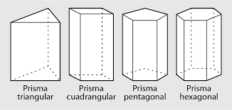

Prisma.
Un prisma, en geometría, es un poliedro que consta de dos caras iguales y paralelas llamadas bases, y de caras laterales que son paralelogramos. Los prismas se nombran por la forma de su base, por lo que un prisma de base pentagonal se llama prisma pentagonal. Los prismas son una subclase de los prismatoides.
